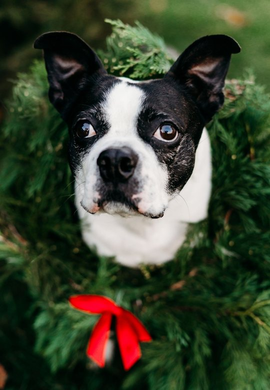
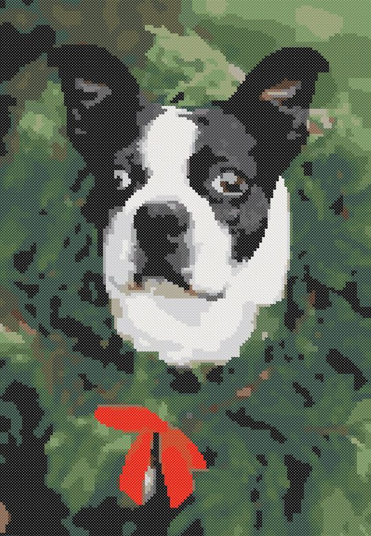
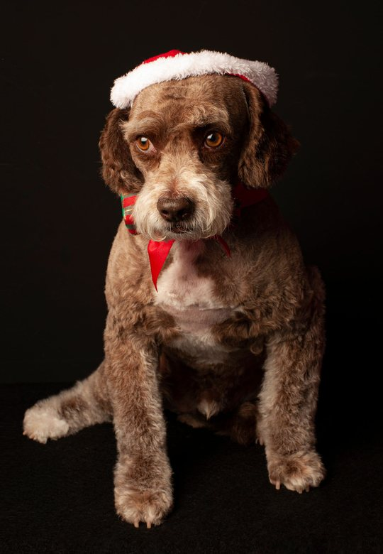
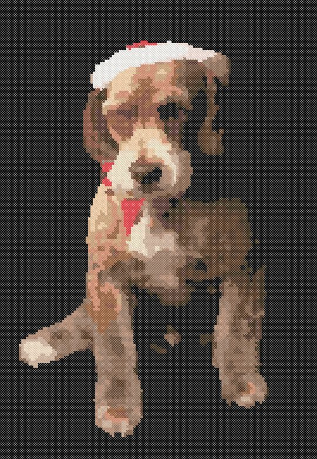

Christmas Cross Stitch Gifts from Pet Photos: What You Can Finish in Time
A stitched portrait of someone's dog or cat is a gift people keep for years. The hard part is the calendar: a big portrait takes months. Here is how to choose gifts you can really finish by Christmas, how to make a matching set for several pets, and a gift that takes no stitching time at all.




1. Count the evenings, then pick the size
Most people stitch 150–250 full stitches an hour. From early November to the week before Christmas there are about seven weeks. With an hour every evening that is roughly 7,000–12,000 stitches — so plan the gift from the time you have, not the other way round.
| Gift | Stitches | Total | Time | Fits before Christmas? |
|---|---|---|---|---|
| Ornament | 60 × 75 | 4,500 | 18–30 hours | yes, even two |
| Small framed piece or card | 80 × 100 | 8,000 | 32–53 hours | yes, with an hour most evenings |
| Medium portrait | 100 × 133 | 13,300 | 53–89 hours | only with 1.5–2 hours a day |
| Large portrait | 133 × 200 | 26,600 | 106–177 hours | only with 2–3 hours a day — or plan it for next Christmas |
A large 133 × 200 portrait is a wonderful gift for next Christmas or a birthday; for this December, choose a smaller size or start now and stitch a little more each day.
2. Ornaments and small pieces: keep it simple
At ornament size (around 60 × 75 stitches, about 4 × 5 inches on 14 count) a pattern keeps the shape, the colors and the markings, not every hair. Choose a photo where the head is large and clear, with plain light behind it, and use 12–18 colors. A red bow, a Santa hat or a scarf from the photo makes it festive without extra design work.
3. Several pets? Make them a set
If you stitch for the whole family — the dog, two cats, the neighbour's spaniel — make every pattern the same size in stitches and on the same fabric. Similar backgrounds and the same frame or ornament hoop turn separate gifts into a series that looks planned. Make all the patterns first, buy the floss in one go (many DMC colors repeat between pets), then stitch one after another.


4. A gift with no stitching time: the pattern itself
For a friend who stitches, the pattern of her own pet is a gift in itself: print the chart with the symbol key and the skein list, add the floss and a piece of Aida, and she gets a project she will love working on all winter. It takes an evening to put together, not seven weeks.
5. Finishing in time
- Leave a week for washing, pressing and framing — framers are busy in December.
- Stitch the face first: if time runs out, a finished face with the background left unstitched still looks complete.
- Dark fabric for a dark pet is faster: the fabric does the black and you stitch only the lighter parts.
Get Nitki on Google Play